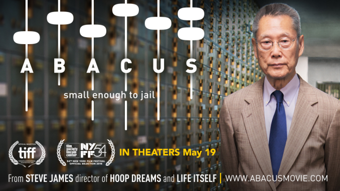

The end of the 2008 financial crisis marked the beginning of an agitated love-hate affair between Hollywood and Wall Street. Movies that satirized, maligned, or celebrated the exploits of the veiled “masters of the universe” became incredibly popular. Hollywood had found its new villain, and the following years saw the release of a string of movies like Margin Call (2011), Too Big to Fail (2011), and The Big Short (2015).
Steve James’s new documentary, Abacus: Small Enough to Jail, might be described as the anti-Big Short. It refuses to play into the tropes and excesses of its precursors. For one, it makes no attempt to glamorize the work of bankers or bamboozle the viewer into dumb awe with a barrage of inscrutable technical terms—CDS’s, MBS’s, tranches, and the like. Instead, the only source of the fantastic comes from the film’s very premise: Abacus is a profile of the only bank to have been criminally charged with mortgage fraud in the wake of 2008, and the family behind its operations. Only problem is, the bank in question, Abacus Federal Savings Bank, is no Goldman Sachs or Citigroup; it’s actually a small, family-owned bank that serves the mostly Cantonese-speaking immigrant community of New York Chinatown. And the family behind it—the Sung’s—are the furthest thing from faceless Rothschilds. They are, in a word, the bankers-next-door; the nicest financiers you’ll ever meet, two generations of whom have dedicated their lives to serving their community. Two questions, then, surface at the beginning of the film: firstly, given that these people are bankers, how can they be likable (and I mean genuinely likable, not in a love-to-hate kind of way); and secondly, if they are indeed such nice people, how on earth did they get into so much trouble?
The documentary wastes no time in getting to the first question. It opens with a few scenes from the classic 1946 Christmas film It's a Wonderful Life, which is one of those movies that everyone dimly remembers from childhood. In a nutshell, It's a Wonderful Life tells the story of a good banker—a selfless small-town man named George Bailey, who, despite having dedicated his entire life to serving his community of Bedford Falls, nonetheless finds himself at the brink of suicide on Christmas Eve. The problem is, George has fallen victim to a conspiracy laid by a powerful man in town aimed at destroying the fiduciary credibility of his bank. Luckily, he has a guardian angel (does the name Clarence Oldbody ring a bell?) tasked to saving him, and in the end, both man and bank are redeemed.
Abacus finds its own George Bailey figure in the enigmatic Thomas Sung, patriarch of the Sung family and pillar of his community. Here is a man of few words, who emigrated to New York from Shanghai in his early teens; settled in Chinatown; went to law school; carved out an illustrious career representing community organizations in Chinatown; and then, and only then, decided to start a bank because he felt it was the right thing to do. In his own words, the non-Chinese banks in the area were willing to take his countrymen’s deposits—but never loan out a cent.
The bank that Thomas Sung built, Abacus Federal Savings Bank, was dedicated to the mission of putting the American dream within reach of the Chinese immigrants that settled in New York. To accomplish this, it had to take a tailored approach: service in Cantonese as well as English, and underwriting practices that acknowledged unique, local economic realities, such as “renumerations” that blurred the line between gift and loan, and businesses that kept sparse records and operated mostly in cash. Perhaps it is a testament to the strength of Thomas’s vision that his three daughters, who grew up in Greenwich, CT, decided to run the bank with him after graduating college rather than pursuing more glamorous careers uptown.
What is the strangest thing about this picture? Is it the exotic terrain of Chinatown, whose vivid sights and smells James brings to life? Or is it something more fundamental—the idea of banking as not just legitimate, but indeed honorable vocation (calling; life’s work), of a banker as a vital part of the community?
Both of these concerns come to bear on the second question posed above. The bulk of the documentary focuses on the exhausting legal battle that the Sung family must wage against the New York DA’s office, which accuses them of selling fraudulent mortgages to Fannie Mae. The reason this is ridiculous is because unlike the billions of dollars of actually fraudulent mortgages (not to mention the even greater quantity of derivative products) underwritten and sold to the public by giant financial institutions, the mortgages originated by Abacus were sound; people paid them back. The question, then, is not how, but why: why was Abacus singled out for a crime it did not commit, when the real perpetrators were already tried and set free?
The undeniable racism of the DA’s decision to use Abacus as a scapegoat is made obvious in a single, gutwrenching scene in which several Chinese employees of the bank are brought into a police station, cuffed to one another, and paraded around the station in front of the press like a modern-day chain gang. The film’s very title downplays this essential fact. Abacus wasn’t indicted because it was small. There are small banks all over America that weren’t targeted. It was singled out because it was different; because its customers were “foreigners,” who spoke a different language, who naturally couldn’t be trusted. Unfortunately, the logic behind the DA’s choice to bully the Abacus Federal Savings Bank is plain and simple: the system, overcome by the nausea of its own moral toxin, resorted to purging its guilty conscience by projecting its contradictions onto an entity it perceived as alien to itself, and betting that the latter wouldn’t have the wherewithal to fight back. Of course, the particular ethnic context of this profiling is made all the more salient by recent trends in US-China relations: economic and military competition between a sitting and a rising superpower, false accusations of espionage levied against Chinese American scientists, the age-old idea of a “Yellow Peril.” Yet how supremely and transparently ironic that the villainous role the DA attempted to wedge Abacus into suits no one better than the deeply entrenched banks it has already pardoned. Ultimately, what the prosecution’s case demonstrates best of all is the acuteness of its own moral crisis.
When all is said and done, credit emerges as a fitting lens through which to consider relations between old Americans and new. America is a nation of immigrants, and she has many languages. But because of our financial system, money is the universal language that binds our communities together. If you reject my bond on the basis of ethnicity, then you refute my right to co-exist with you. The odious implication that “the Chinese mortgages are poisonous” puts a stain on the entire community, casts it as a tumor to the body politic. In the end, it was one of Thomas’s friends who said it best: “It’s not about Abacus being clear, it’s about exonerating our entire community.”
Unlike George Bailey, Thomas Sung didn’t have a guardian angel to save him. What he had instead were his loving wife and three daughters, whose care and affection make for some of the most moving scenes in the entire film. Perhaps the most remarkable thing about the Sung’s is how they elevated themselves through their protracted battle to become ideal citizens. They refused to kowtow; they spoke truth to power—in eloquent, American English, and in doing so, spoke on behalf of first generation immigrants everywhere.
Abacus is a film that shows the best and the worst of modern America. For that reason, it will surely give any viewer much to think about.